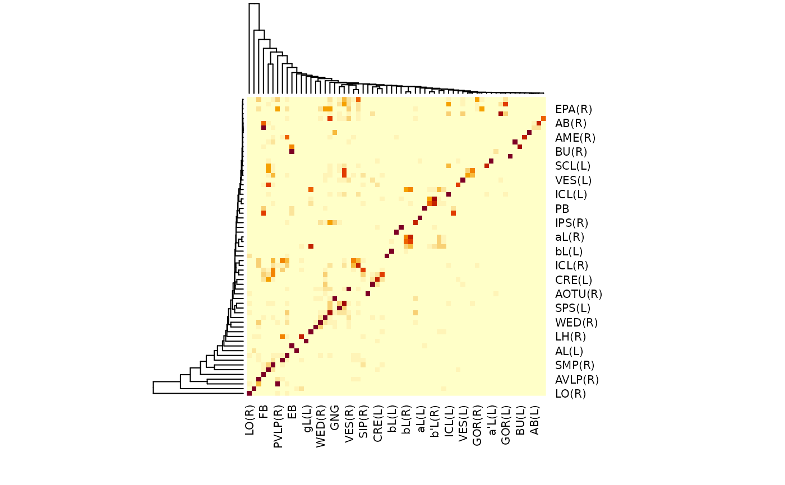

R/roi.R
neuprint_ROI_connectivity.RdGet connectivity between ROIs (summary or data frame of connecting neurons)
neuprint_ROI_connectivity( rois, full = TRUE, statistic = c("weight", "count"), cached = !full, dataset = NULL, conn = NULL, ... )
| rois | regions of interest for a dataset |
|---|---|
| full | return all neurons involved (TRUE, the default) or give a numeric ROI summary (FALSE) |
| statistic | either "weight" or count" (default "weight"). Which number
to return (see neuprint explorer for details) for summary results (either
(when |
| cached | pull precomputed results (TRUE) or ask server to recalculate
the connectivity (FALSE). Only applicable to summary results when
|
| dataset | optional, a dataset you want to query. If |
| conn | optional, a neuprintr connection object, which also specifies the
neuPrint server. If NULL, the defaults set in your
|
| ... | methods passed to |
When requesting summary connectivity data between ROIs, we recommend
setting cached=FALSE. We have noticed small differences in the
connections weights, but computation times can get very long for more than
a handful of ROIs.
# \donttest{ aba <- neuprint_ROI_connectivity(neuprint_ROIs(superLevel = TRUE),full=FALSE) heatmap(aba)# }